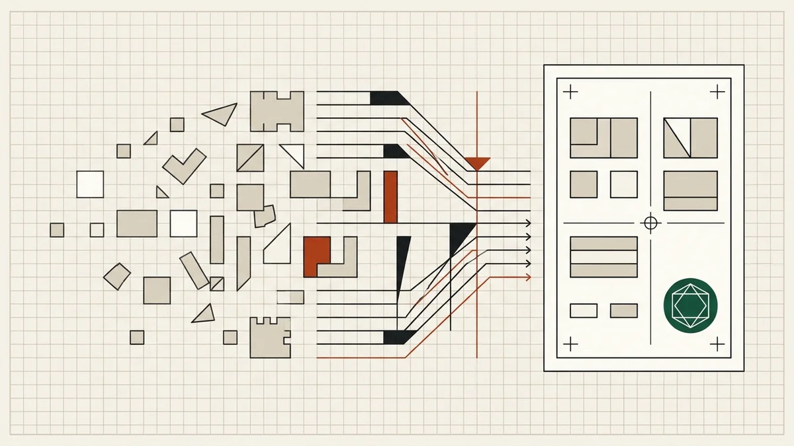

İçindekiler

Neden ayrı bir Prompt Modu geliştirdim?
Kodlama agentlarıyla (Codex, Antigravity, Cursor, Claude Code vb.) çalışan geliştiricilerin büyük çoğunluğu aynı hayal kırıklığını yaşar: kafasında net bir fikir vardır ama tek cümlelik bir komut verdiğinde agent istemediği bir veritabanı kurar, mevcut çalışan arayüzü bozar, alan adı kökünü değiştirir ya da işi test etmeden “tamamlandı” diyerek teslim eder.
Sorun çoğu zaman modelin zekâsında değil, eksik tanımlanmış gereksinimlerde ve belirsiz kabul ölçütlerindedir. Ancak her görevden önce sıfırdan 40 satırlık kusursuz teknik şartname yazmak da ciddi zaman alır. HaKING AI Prompt Modu tam bu boşluğu doldurur: fikir aşamasında sizinle sohbet ederek kritik belirsizlikleri açığa çıkarır, neyi kesinleştirdiğinizi ve neyi agente devrettiğinizi ayırır, ardından tüm kurallarınızı koruyan denetlenmiş bir görev promptu üretir.
4 Adımda Prompt Modu Çalışma Akışı
- Ham Fikri veya Mevcut Taslağı Yaz: Yeni bir görev tarif edebilir ya da “Şu metni promptlaştır” diyerek mevcut taslağını yapıştırabilirsin. İstersen “basit anlat” veya “teknik anlat” şeklinde anlatım derinliğini belirleyebilirsin.
- Ücretsiz Keşif ve Netleştirme Soruları: Gerekli hedef, hedef agent, değiştirilmemesi gereken kurallar veya yayın ortamı eksikse HaKING kredi kesmeden yalnızca kritik soruları sorar. Model veya araç seçimini asistana bırakmak ilerlemeyi engellemez.
- Görev Kartı Onayı (Üretim Öncesi Özet): Nihai prompt yazılmadan önce kesinleşen kullanıcı şartları, agente devredilen seçimler ve hâlâ açık olan sorular şeffaf bir görev kartında gösterilir.
- Araştırma, Bağımsız Denetim ve Kopyalama: Onay verdiğinde sistem gerektiğinde web araştırması yapar, kalan yer tutucuları, alan adı veya dağıtım çelişkilerini bağımsız denetim katmanından geçirir ve doğrudan agentına yapıştırabileceğin nihai promptu teslim eder.
Önce / Sonra Etkileşimli Prompt Karşılaştırıcısı
Aşağıdaki sekmelerden bir görev türü seçerek sıradan bir kullanıcı isteğinin HaKING AI Prompt Modu ilkeleriyle nasıl uygulanabilir, sınırları net ve test edilebilir bir agent talimatına dönüştüğünü canlı olarak karşılaştırabilirsiniz:
v1.19.0 ile Desteklenen 7 Görev Türü
İlk sürümlerde yalnızca yazılım ve kodlama agentlarına odaklanan Prompt Modu, v1.19.0 sürümüyle birlikte çok disiplinli teslimat uyarlaması kazandı:
| Görev Türü | Otomatik Eklenen Kritik Kontroller | Örnek Kullanım |
|---|---|---|
| Kodlama & Agent | Mevcut kod incelemesi, korunacak kurallar, dağıtım/alan adı uyumu, kabul testi | Mevcut web uygulamasına yeni modül veya API ekleme |
| Sunum | Slayt sayısı, hedef kitle, düzenlenebilir format ve uydurma veri yasağı | Yatırımcılar için 8 slaytlık ürün sunumu |
| Video | Klip kaynakları, dikey/yatay oran, tempo, altyazı ve sahne geçişleri | Kısa dikey tanıtım videosu kurgu planı |
| Görsel | Renk paleti sınırları, kompozisyon, oran ve istenmeyen öğe kısıtları | Marka renklerine sadık ürün kapak görseli |
| Yazı & Editoryal | Ton, kaynak doğrulaması, yapısal başlıklar ve şeffaflık kuralları | Teknik blog yazısı veya sürüm bülteni |
| Araştırma | Kaynak sırası (ör. konsept öncesi piyasa taraması) ve doğrulanabilirlik | Oyun konsepti öncesi Steam pazar incelemesi |
| Veri Analizi | Girdi şeması, hesaplama yöntemi, kenar durumlar ve çıktı tablosu | CSV satış kayıtlarından kâr/marj analizi |
Prompt Karar Belleği (prompt_state) ve Bağlam Yalıtımı
v1.10.0’dan v1.19.2’ye kadar yapılan en kritik mühendislik iyileştirmeleri, uzun sohbetlerde bilgi kaybını ve görevlerin birbirine karışmasını önlemek üzerine kuruldu:
- Oturum Yalıtımı: Normal sohbet veya Çılgın Mod geçmişi, Prompt Moduna ilk girişte otomatik gereksinim olarak alınmaz. “Yeni görev” düğmesi eski konuşmaları silmeden temiz bir görev bağlamı başlatır.
- Devredilen Seçimlerin Korunması (v1.19.1): Kullanıcı “altyapıyı sen seç” veya “hazır varlık kullanabilirsin” dediğinde bu izin uzun görevlerde kaybolmaz, görev kartında açıkça taşınır.
- Bağımsız Çelişki Denetimi (v1.12.0–v1.17.0): Alan adı kökünün değişmesi, kalan şablon yer tutucuları, ayrı frontend/backend dağıtım hedefleri ve güncel Wrangler komutları nihai üretimde ayrı bir denetim katmanından geçirilir.
- Tekrarlı Hatalarda Güvenli Yedek (v1.17.2): Sağlayıcı tarafında teknik taslak hatası tekrarlanırsa sistem çökmez; doğrulanmış görev kartından temiz, kopyalanabilir yedek prompt hazırlar.
Gerçek Bir Sohbette Prompt Modu Nasıl Çalıştı?
Şeffaflık ilkemiz gereği yalnızca güçlü yanları değil, bağımsız değerlendirmelerde tespit edilen gelişim alanlarını da açıkça paylaşıyoruz. v1.19.2 sürümü kapsamında bir kullanıcının Codex için 3D çok oyunculu tarayıcı oyunu talep ettiği gerçek bir sohbet iki ayrı büyük dil modeline değerlendirtildi:
Güçlü yönler ve tespit
Eşzamanlı oyun şartı, ücretsiz altyapı ve SQL yasağı, yayın hedefleri ile konsept öncesi Steam araştırma sırası eksiksiz korundu. Gelişim alanı: Metin sadeliği ölçütü — bazı kuralların birden fazla bölümde tekrarlandığı not edildi.
Güçlü yönler ve tespit
Araştırma adımının konsept seçiminden önceye alınması, iki istemcili somut kabul testi ve devredilen kararların korunması olumlu değerlendirildi. Gelişim alanı: Ham ve düzenlenmiş şartların gereksiz tekrarı (v1.19.1’de yedek kart tekrarları azaltıldı).
Bu değerlendirmeler tek bir sohbet örneği üzerinde alınan nitel geri bildirimlerdir; farklı yöntemlere dayanır ve oyunun fiilen üretilip yayına alınma başarısını tek başına ölçmez.
Ortak Kredi Modeli ve Bilinen Sınırlar
HaKING AI hesabındaki her kullanıcı her takvim ayında 100 ücretsiz HaKING kredisi alır. Prompt Modunda keşif soruları ücretsizdir; nihai denetlenmiş prompt üretimi 5 kredi (Çılgın Mod ise 10 kredi) kullanır. İki mod aynı bakiyeyi paylaşır. Codex model önerileri resmî model sayfasından günlük önbellekle kontrol edilir; canlı kaynağa ulaşılamadığında doğrulama tarihi açıkça bildirilir ve hesapta bulunmayan kota veya model vaat edilmez.
Sıkça Sorulan Sorular
HaKING AI Prompt Modu normal sohbetten ne açıdan farklıdır?
Normal sohbet doğrudan tek seferlik yanıt üretir. Prompt Modu ise hedef yapay zekâ agentı (Codex, Claude, Cursor, Gemini vb.) için önce eksik gereksinimleri ücretsiz sorularla netleştirir, kararlarınızı ayrı bir görev kartında (prompt_state) saklar ve nihai üretimde çelişkileri denetleyerek doğrudan kopyalanabilir bir görev promptu üretir.
Prompt Modunu kullanmak kaç kredi harcar?
Prompt Modundaki keşif sohbeti ve eksik bilgileri tamamlayan sorular tamamen ücretsizdir (0 kredi). Araştırma ve denetim aşamasından geçen nihai promptun üretilmesi ise her ay yenilenen 100 ücretsiz HaKING kredisinden yalnızca 5 kredi kullanır.
Sadece yazılım/kodlama işleri için mi çalışıyor?
Hayır. v1.19.0 güncellemesiyle Prompt Modu; kodlama görevlerinin yanında sunum hazırlama, video kurgulama, görsel üretim, yazı/içerik, araştırma ve veri analizi görevlerine göre teslimat biçimini ve kabul ölçütlerini otomatik uyarlar.
Mevcut bir promptumu iyileştirmek için kullanabilir miyim?
Evet. "Şu metni promptlaştır" veya "Mevcut promptumu geliştir" diyerek elinizdeki taslağı yapıştırabilirsiniz; sistem yer tutucuları, çelişkili alan adı/dağıtım hedeflerini ve eksik test ölçütlerini yakalayıp güçlendirir.
Sağlayıcı hatası olursa harcanan 5 kredi iade edilir mi?
Evet. Sağlayıcı hatası veya doğrulama akışı başarısızlığı nedeniyle nihai prompt üretimi gerçekleşmezse kullanılan 5 kredi Neon veritabanı üzerinden hesabınıza geri iade edilir.
Kendi fikrini şimdi Prompt Modunda test et.
Keşif aşaması ücretsizdir; görev kartını onaylamadan kredi harcanmaz.
Halit Güneş (HaKING06)
İstanbul Kültür Üniversitesi Bilgisayar Programcılığı öğrencisi ve bağımsız yazılım geliştirici. Yapay zekâ arayüzleri, CS2 ekonomi analiz araçları, tarayıcı uzantıları ve WebGL tabanlı 3D web ürünleri geliştiriyor; arkasındaki mimari kararları haking.tr'de belgeliyor.